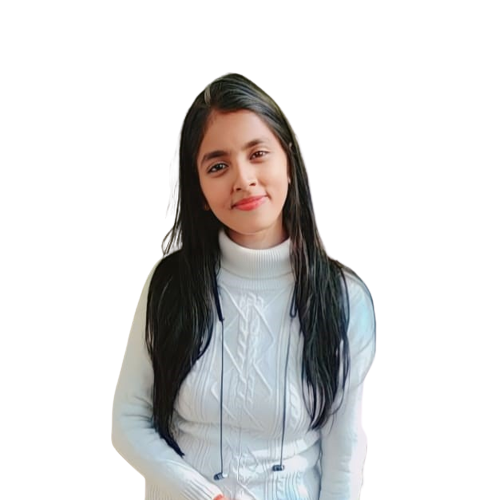

I am
Juhi Kumari
Front end developer & Digital designer
Juhi kumari is 2021 Graduate from Maharshi Dayanand University, Rohtak with a degree Bachelor of computer application. Currently she is pursuing Masters of computer application from Chandigarh university.
she has 9 months of Experience as TCS Tech support. she has hands-on knowledge in Digital Marketing and an Industry level experience. She has good knowledge of HTML, CSS, JavaScript, React and many other tech languages.
